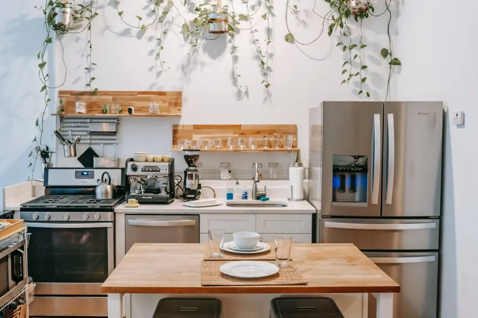
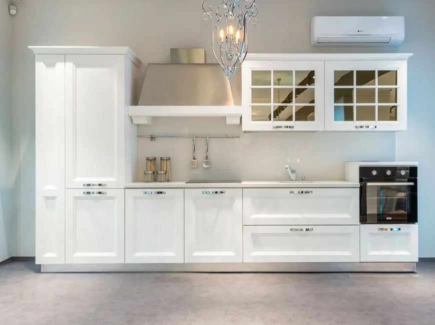
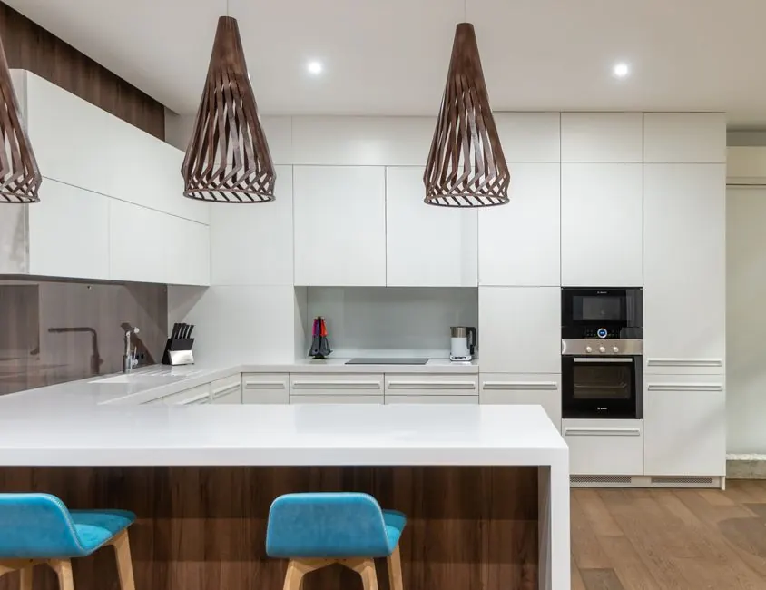

Fast, reliable, and affordable repair solutions
Expert electric dryer repair Vero Beach FL
Electric dryer repair Vero Beach FL is crucial for homeowners facing appliance issues. Our affordable electric dryer repair services in Vero Beach ensure your dryer operates efficiently, so you can enjoy hassle-free laundry days.
Live dispatcherUpfront optionsBacked workmanship
What's included
What's Included in Electric Dryer Repair
Our electric dryer repair service includes a thorough inspection, necessary repairs, and testing to ensure your appliance functions properly. Additional services may be offered based on specific needs.
Comprehensive inspection
We conduct a detailed inspection of your dryer to identify any potential issues, ensuring nothing is overlooked.
Replacement of faulty parts
If any components like the heating element or drum belt are damaged, we replace them with high-quality parts from trusted brands.
Testing and verification
After repairs, we test the dryer to confirm it operates correctly, providing you with peace of mind.
Safety checks
We perform safety checks to ensure your dryer meets all safety standards and is safe to use.
Service overview
What is electric dryer repair Vero Beach FL?
Electric dryer repair Vero Beach FL is a specialized service that addresses common issues in electric dryers, such as heating failures, drum malfunctions, and electrical faults. Our experienced technicians use advanced tools and techniques to diagnose and fix problems, ensuring your dryer returns to optimal performance.
Local Vero Beach customers often need electric dryer repair due to the humid coastal climate, which can affect appliance performance. Common scenarios include dryers not heating properly or making unusual noises. Our Vero Beach electric dryer repair services are designed to quickly address these issues, providing peace of mind and efficient laundry cycles.

How we workWe verify the cause, compare realistic options, and confirm the repair before we leave.
The service timeline
What to expect during electric dryer repair
The process flexes to the condition, but these checkpoints keep decisions clear.
Initial consultation
We start with a phone consultation to understand your dryer issues better. Our team will schedule a visit at your convenience, typically within 24 hours.
On-site diagnosis
Our technician arrives equipped with a multimeter and other tools to diagnose the problem accurately. This step usually takes about 30 minutes.
Repair estimate
After diagnosing the issue, we provide a detailed estimate, including parts and labor costs. You'll have the final say before we proceed with any work.
Repair execution
Once approved, our technician will perform the necessary repairs, using quality parts from brands like Whirlpool and LG. Most repairs are completed within 1-2 hours.
Post-repair testing
After repairs, we conduct thorough testing to ensure your dryer is functioning correctly. We'll also provide maintenance tips to keep it running smoothly.
Tools & methods
Tools and Methods Used in Electric Dryer Repair
Purpose-built equipment, used by trained technicians, so the job is done accurately the first time.
Multimeter
Used for diagnosing electrical issues, ensuring accurate detection of faults.
Screwdriver set
Essential for accessing internal components and replacing parts during repairs.
Drill
Utilized for securing or removing screws and fittings in the dryer assembly.
Clamp meter
Measures electrical current to diagnose issues with the dryer's electrical system.
Use cases
When to Use Electric Dryer Repair
These examples show how the service framework adapts rather than forcing every call through one repair.

Drum not turning
The dryer drum was not turning, causing frustration during laundry days. → With a new drum belt installed, the dryer now operates smoothly, allowing for efficient drying.
Loud banging noises
The dryer was making loud banging noises, indicating potential mechanical issues. → After tightening loose components, the dryer runs quietly, enhancing the laundry experience.
Problems we solve
Problems Solved by Electric Dryer Repair
Our electric dryer repair services effectively address several common issues faced by homeowners in Vero Beach.
Dryer not heating properly
We diagnose heating element failures and replace them, ensuring your dryer heats effectively and operates efficiently.
Drum not turning
We inspect and replace faulty drum belts or motors, restoring your dryer's functionality quickly.
Dryer making unusual noises
Our technicians identify and repair issues like worn bearings or loose parts, preventing further damage and ensuring a quiet operation.
Pricing process
Electric Dryer Repair Pricing
$180 - $450 depending on scope
Type of repair needed
Simple repairs like belt replacements are less expensive than complex electrical issues.
Brand of dryer
Certain brands, like LG and Samsung, may have higher parts costs due to availability.
Age of the appliance
Older models may require more extensive repairs, potentially increasing labor costs.
Customer reviews
What Our Customers Say
★★★★★
“I had an issue with my dryer not heating, and Dryer Repair Vero Beach responded quickly. The technician was knowledgeable and fixed the problem in no time!”
★★★★★
“Great service! My dryer was making a strange noise, and they diagnosed the problem quickly. I appreciate their professionalism and timely service.”
★★★★★
“I called them for an emergency repair when my dryer stopped mid-cycle. They arrived within an hour and had it up and running in no time. Highly recommend!”
What are the common problems with electric dryers in Vero Beach?
Common problems include dryers not heating, making unusual noises, or the drum not turning. These issues often stem from faulty heating elements, belts, or electrical connections.
How much does electric dryer repair cost in Vero Beach?
Electric dryer repair costs in Vero Beach typically range from $180 to $450, depending on the issue and parts needed for the repair.
Where can I find electric dryer repair near me in Vero Beach?
You can find reliable electric dryer repair services near you by searching online or calling local repair companies like Dryer Repair Vero Beach.
How long does electric dryer repair take?
Most electric dryer repairs take between 1 to 2 hours, depending on the complexity of the issue and the availability of parts.
Ready when you are
Need electric dryer repair Vero Beach FL?
Contact us today for fast and reliable electric dryer repair services in Vero Beach, FL. Our certified technicians are ready to help you get back to your laundry routine.

Talk with the local team
Request electric dryer repair
Reach out to us for all your dryer repair needs in Vero Beach. We are available from 8 AM to 6 PM and respond promptly to inquiries.